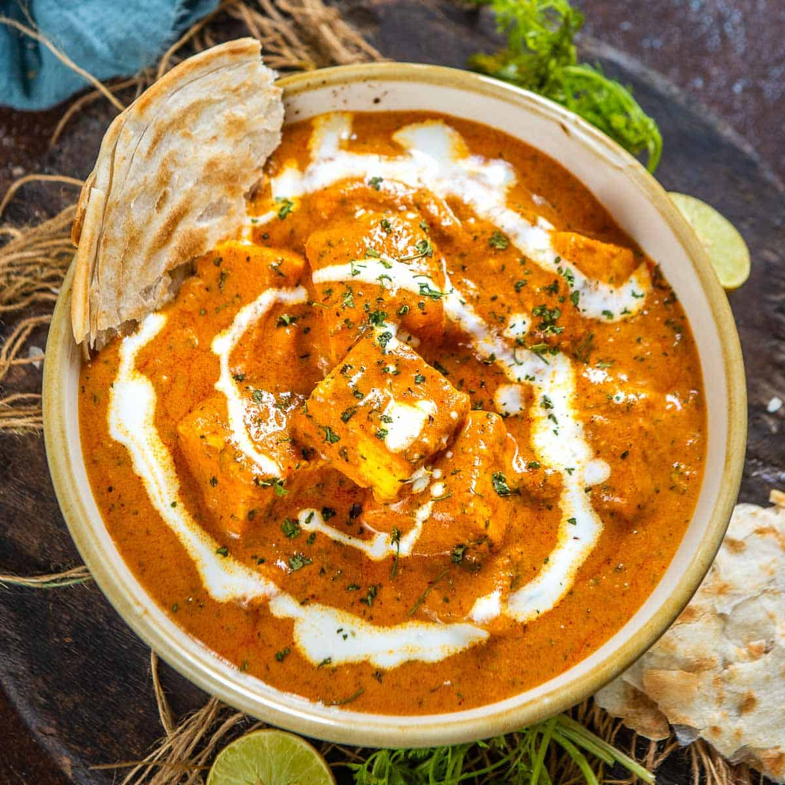

Paneer Butter Masala

Instructions:
- In a pan, melt butter over medium heat.
- Add chopped onions and sauté until golden brown.
- Stir in ginger-garlic paste and cook for a minute until the raw smell disappears.
- Add tomato puree, red chili powder, garam masala, and turmeric powder. Cook until the mixture thickens and the oil separates.
- Add the cashew paste and cook for a few more minutes.
- Add paneer cubes, salt, and kasuri methi. Mix well.
- Pour in the heavy cream and simmer for 5-7 minutes until the curry reaches the desired consistency.
- Garnish with fresh cilantro.
- Serve hot with naan or rice.